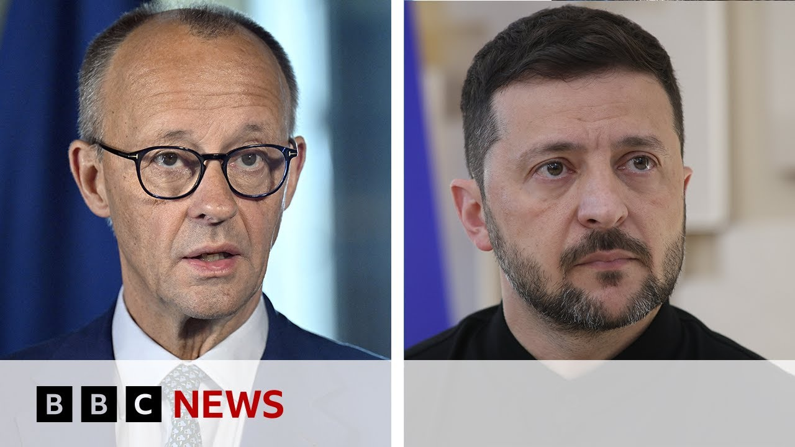

【德国支持乌克兰对俄罗斯进行远程打击 | BBC新闻】
Summary: Russia accuses Ukraine of escalating air attacks to thwart peace talks, as Germany allows Kyiv to use Western weapons against military targets deep inside Russia, with Britain and the US lifting range restrictions last year. The German chancellor stated this would aid Ukraine's war effort, following intense Russian attacks involving hundreds of drones and cruise missiles. Moscow officials criticized US President Trump's remarks on Putin, while a Cambridge expert highlighted the impact of Germany's decision on Ukraine's ability to target Russian military depots and troops.
摘要： 俄罗斯指责乌克兰通过升级空袭破坏和谈，而德国允许基辅使用西方武器打击俄罗斯境内纵深军事目标，英美去年已解除射程限制。德国总理称此举将助力乌克兰作战，此前俄方对乌发动大规模无人机和导弹袭击。莫斯科官员批评美总统特朗普对普京的言论，剑桥专家则强调德国决定对乌军打击俄军事仓库和部队的影响。

⏱️ Estimated Reading Time: 4 min
Russia has accused Ukraine of thwarting peace talks by escalating air attacks.
俄罗斯指责乌克兰通过升级空袭破坏和谈。
It comes as Germany says Kyiv is now free to use western supplied weapons to hit military targets deep inside Russia.
德国宣布基辅现在可自由使用西方提供的武器打击俄罗斯境内纵深军事目标。
Britain and the US lifted range restrictions on the weapons they supplied to Kyiv last year.
英国和美国去年已解除对提供给基辅的武器的射程限制。
The German chancellor said the move would help Ukraine to fight the war.
德国总理称此举将助力乌克兰作战。
The comments from Germany follow a blistering series of attacks on Ukraine over the weekend in which Russia launched hundreds of drones along with at least nine cruise missiles.
德国此番表态前，俄方周末对乌发动一连串猛烈袭击，出动数百架无人机和至少九枚巡航导弹。
Officials in Moscow have suggested President Trump is quote emotionally overloaded after the US president said Vladimir Putin had gone absolutely crazy by escalating air strikes on Ukraine.
莫斯科官员称，美国总统指责普京升级对乌空袭“完全疯狂”后，特朗普“情绪过载”。
A little earlier, I heard from Victoria Doenchenko, program leader of the future for Ukraine project at Cambridge University to get her response to the German Chancellor's comments and what difference she thinks it will make to the Ukrainian war effort.
稍早前，我采访了剑桥大学“乌克兰未来”项目负责人维多利亚·多年琴科，听取她对德国总理表态的回应及此举对乌战事的影响。
The German chancellor just reinforced the words not only of Kier Starmer but also of President Macron and of course the position of the United States on having no longer any restrictions to have this long range missile attacks.
德国总理不仅重申了基尔·斯塔默和马克龙总统的立场，也确认美国不再限制远程导弹袭击的立场。
Attacks is happening because to be precisely what you said it's not only more than 300 Shahads it's actually 900 Shahadets in the last three days that were launched on civilians.
袭击持续发生，准确来说，过去三天不仅发射了300多架“沙赫德”无人机，实际数量达900架，目标直指平民。
Basically there were combination attacks with missiles but also many other major cities.
袭击混合使用了导弹，并针对其他多个主要城市。
Basically there was actually the celebrations of Kyiv what we say birthday so when anniversary of the city comes.
当时正值基辅建城纪念日庆典。
What does it make and what feels for Ukrainians for most of all is not only to target the Russian civilians but actually to target the depots where the most what we say of the weapon and the strikes where the Russian troops are launching.
对乌克兰人而言，关键不仅是打击俄平民，更是打击俄军武器仓库和部队发射阵地。
That will be definitely the game changer and of course if the United States President Donald Trump words it's going to be true of course Ukraine would love to see those sanctions to be in action because it was promised already since May 12th when no ceasefire from the Russian troops and Russian position was reinforced.
这绝对是转折点，若美总统特朗普所言成真，乌克兰希望制裁落地，因自5月12日俄方拒绝停火并强化立场后，制裁承诺一直未兑现。
So therefore sanctions didn't happen that time.
因此当时制裁并未实施。
We hope they're going to be happen at the beginning of June if supposedly understandably when the Congress going to be out of its holidays and can vote for such sanctions leaded by Lindsey Graham to be in action.
我们希望6月初国会结束休会后能投票通过林赛·格雷厄姆主导的制裁。
Yeah I mean you you mentioned President Trump there.
是的，你提到特朗普总统。
Do you think there's anything significant about the change in his rhetoric regarding Mr. Putin?
你认为他对普京言论的变化有何深意？
Well that's the point because Donald Trump is zigzagging.
关键在于特朗普立场反复。
So sometimes he's saying one thing and then reinforcing it from different actions and sometimes it's a reverse thing.
他时而表态，时而用行动强化，时而又反转。
So now finally when he says that he is disappointed with the position of Kremlin leader it's not something new for Ukrainians and it's not something new for the European leaders itself but being disappointed and making it in a real let's say actions there are two different thing and we hope we can see these words being linked to actions.
如今他称对克里姆林宫领导人立场失望，这对乌克兰和欧洲领导人并非新闻，但失望与实际行动是两回事，我们希望言论能转化为行动。